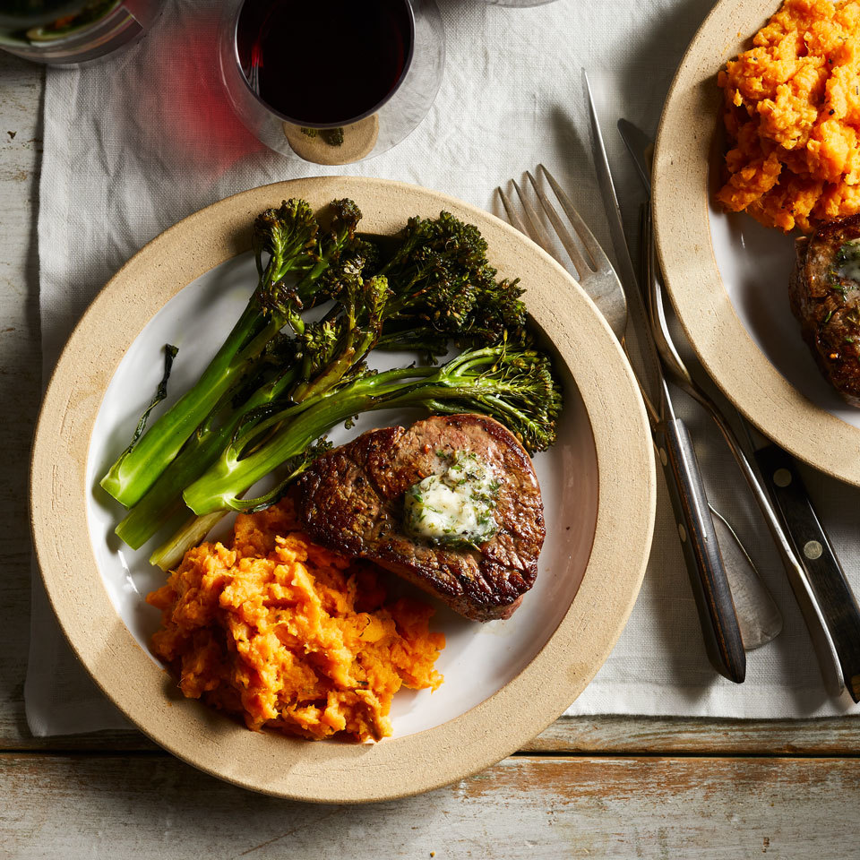

Steak w/ Sweet Potato Hash

Get Yo Iron Up
A steak and sweet potato dinner is a classic and satisfying meal that is sure to satisfy your taste buds. The steak, typically a juicy and tender cut of beef, is seasoned with herbs and spices and cooked to perfection, while the sweet potato is roasted until caramelized on the outside and soft on the inside.
The combination of savory and sweet flavors makes for a delicious and balanced meal, and the high protein content of the steak and the complex carbohydrates in the sweet potato provide plenty of energy to fuel your body. This meal is perfect for a cozy night in or a special occasion, and is sure to impress even the most discerning of diners.
Ingredients
- 1 tablespoon butter, slightly softened
- 1/2 teaspoon minced garlic
- 1 teaspoon chopped fresh herbs (thyme,rosemary, and or chives)
- 1 small sweet potato, peeled and cut into 1/2in pieces
- 1/4 cup low-fat milk
- 3/4 teaspoon ground pepper
- 1/2 teaspoon salt
- 1 bunch broccolini, trimmed and halved
- 4 teaspoons extra-virgin olive oil, divided
- 2 steaks
Steps
- Preheat oven to 425 degrees F.
- Combine butter, garlic and herbs in a small bowl. Set aside.
- Bring an inch of water to a boil in a large saucepan fitted with a steamer basket. Add sweet potato, cover and steam until tender, about 10 minutes. Transfer to a medium bowl. Add milk, 1 teaspoon of the herb butter, 1/4 teaspoon pepper and 1/8 teaspoon salt. Mash with a large fork or potato masher to desired consistency. Cover and keep warm.
- Toss broccolini with 2 teaspoons oil, 1/4 teaspoon pepper and 1/8 teaspoon salt in a large bowl. Place the broccolini on one half of a large rimmed baking sheet and roast until beginning to soften, about 10 minutes.
- Pat steaks dry with paper towel and season both sides with 1/4 teaspoon each salt and pepper. Heat the remaining 2 teaspoons oil in a medium skillet over medium-high heat. Cook the steaks, turning once, until browned on both sides, 1 to 2 minutes per side. Remove the broccolini from the oven and stir. Place the seared steaks on the empty half of the baking sheet. Return to the oven and roast until the broccolini has softened and the steaks are cooked to desired doneness, 3 to 5 minutes for medium-rare. Transfer each steak to a plate and top each one with 1 teaspoon of the herb butter. Serve with the broccolini and mashed sweet potato.